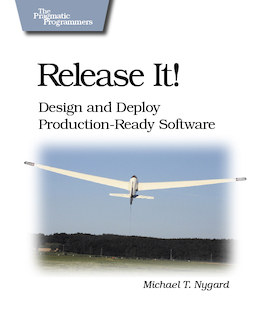
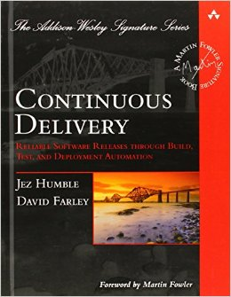

December Picks - Release It!, Continuous Delivery
With an important release coming up at work, my mind has been on stability, testing, and continuous delivery. So in my usual fashion I sought out the highest regarded wisdom and pored through these two books.
Release It! - Michael T. Nygard

Release It! is about planning, testing, and releasing production software. And why a significant number of projects fail at the release stage.
I see the two main topics in this book as design and testing. How you approach these ultimately decide the success of your project.
Design
Design and architecture decisions are also financial decisions.
Design determines implementation and maintenance costs as well as your exposure to risk.
Bugs will happen. They cannot be eliminated, so they must be survived instead.
Through design we reduce bugs as much as possible, but also accept that some will still happen and plan accordingly to reduce the impact on the system.
Testing
Unit tests (and TDD) have been hot-topics in recent years, but there are other types of testing you must do to have a successful production release: longevity and capacity tests, and running all tests in the production (or identical) environment.
Some bugs only appear after a system has been running for a very long time. As developers are constantly starting fresh when coding, these types of bugs are missed.
Capacity testing should encompass not just a high number of requests, but the most expensive operation in the system for a sustained period of time. You should have an idea of what typical usage patterns will be like, but also plan for the unexpected (DOS-like) scenarios.
Patterns
Other than ideas on these, a number of anti-patterns and patterns are presented to help you make you project stable.
Two key patterns that I put to immediate use are the circuit breaker and the pathological test harness.
A circuit breaker is a switch you put in your api call module to prevent repeated failed calls. The maxim behind this is that if a call fails, another immediately after will likely also fail. Once a defined cool off period has passed the breaker can be reset. This can reduce pressure on your backend service as well as avoid making unnecessary calls client-side.
The “pathological” test harness is a module you develop to give canned (unexpected) responses to api calls to test how your program behaves. Too often developers only test happy-path responses. What about an api which always responds after 10 seconds (or never?), or returns invalid (or garbage) data? A backend may succumb to excessive load, will your client crash as a result?
Some of the advice is Java-focused (there are a number of patterns around threading, managing connection pools etc), but still a lot of value for any platform.
Continuous Delivery - Jez Humble, David Farley
 Continuous Delivery is an alternative to the waterfall approach of releasing software (developing for a LONG time, followed by a test phase, followed by a big-moment release - praying included) where instead you ensure that you always have a releasable product. The facilitator for this, and the focus of much of the book is the delivery pipeline.
How long would it take your organization to deploy a change that involves just one single line of code? Do you do this on a repeatable, reliable basis?
Why Continous Delivery?
The main advantage of the deployment pipeline lies in the rapid feedback you get on the effect of every change on the fully integrated application—something that is impossible in the source promotion model.
First off, why should you aim for continuous delivery? Simply, only if you are frequently (daily/hourly) integrating code and building the release product can you know the quality of your project.
In software, when something is painful, the way to reduce the pain is to do it more frequently, not less.
A second important point is that delaying implementing the production release process until the delivery target date means that it will be done with zero prior experience. Doing this process hundreds, thousands of times beforehand means that it will be a trivial non-event when it really does matter.
Lastly, the waterfall approach to development makes each phase a black box - development, testing, operations teams are left out of each others decisions and internal processes. Having a continuous delivery pipeline requires cooperation of all teams or roles from the beginning and make the entire process transparent to stakeholders and management as well.
The Pipeline
- Commit tests. Unit tests and coverage metric checks
- Automated acceptance tests. Business-value features that must work.
The objective of acceptance tests is to prove that our application does what the customer meant it to, not that it works the way its programmers think it should.
- Environment/Capacity tests. Check availability of network services and verify performance under load.
- Manual testing. For verification of user experience, and acceptance tests performed by stakeholders. Since not every organization will want automated release through to production, this stage acts as a gate that key decision makers can use to certify builds. The promotion to this stage and release beyond it should be push-button though.
- Automated release. Repeatable, auditable scripted deploys. Using scripts ensures consistency and elimination of human-errors in performing IDE builds.
It should be possible for a new team member to sit down at a new workstation, check out the project’s revision control repository, and run a single command to build and deploy the application to any accessible environment, including the local development workstation. It should also be possible to see which build of your various applications is deployed into each of your environments, and which versions in version control these builds came from.
Similar to Release It, a lot of specific advice is targeted at the Java ecosystem, but one can easily take each step in the pipeline and adapt it to your platform and environment.
Developing the pipeline is no small task and is likely the most important one for your project. The earlier you start, the better. It’s easier to set the foundation in each step when there are few (or no) features than when you have actual users. The authors provide this five step process to get you there:
- Model your value stream and create a walking skeleton.
- Automate the build and deployment process.
- Automate unit tests and code analysis.
- Automate acceptance tests.
- Automate releases.